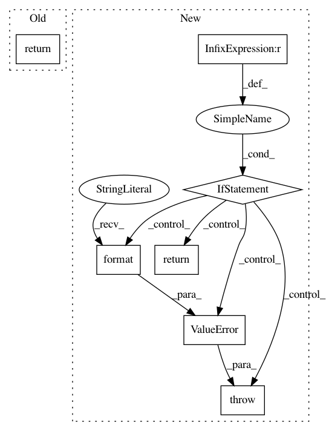

be119b0bb043be437f9619c26cf0f9878a6a9090,GPflow/misc.py,,get_tensor_by_name,#Any#Any#Any#,38
Before Change
graph = _get_graph(graph)
try:
if index is not None:
return graph.get_tensor_by_name(":".join([name, index]))
return graph.get_tensor_by_name(name)
except ValueError:
return None
After Change
tensor = _get_tensor_by_name(name, "0", graph)
if tensor is None:
return tensor
if _get_tensor_by_name(name, "1", graph) is not None:
raise ValueError("Ambiguous tensor for "{0}" with multiple indices found."
.format(name))
return tensor
def is_ndarray(value):
return isinstance(value, np.ndarray)
In pattern: SUPERPATTERN
Frequency: 3
Non-data size: 7
Instances
Project Name: GPflow/GPflow
Commit Name: be119b0bb043be437f9619c26cf0f9878a6a9090
Time: 2017-09-14
Author: art.art.v@gmail.com
File Name: GPflow/misc.py
Class Name:
Method Name: get_tensor_by_name
Project Name: tryolabs/luminoth
Commit Name: 09cbb9f2bb00eb5d3bd1dad15a437bed6822e468
Time: 2017-10-27
Author: dekked@gmail.com
File Name: luminoth/models/base/base_network.py
Class Name: BaseNetwork
Method Name: get_trainable_vars
Project Name: google/deepvariant
Commit Name: 37651fcb98ae564f95c28fbbe3401f48731f7a0d
Time: 2018-07-30
Author: no-reply@google.com
File Name: deepvariant/realigner/window_selector.py
Class Name:
Method Name: _candidates_from_reads